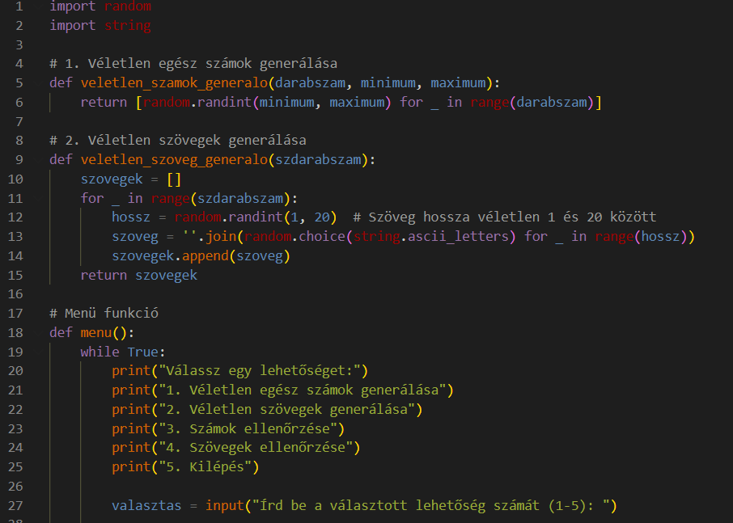
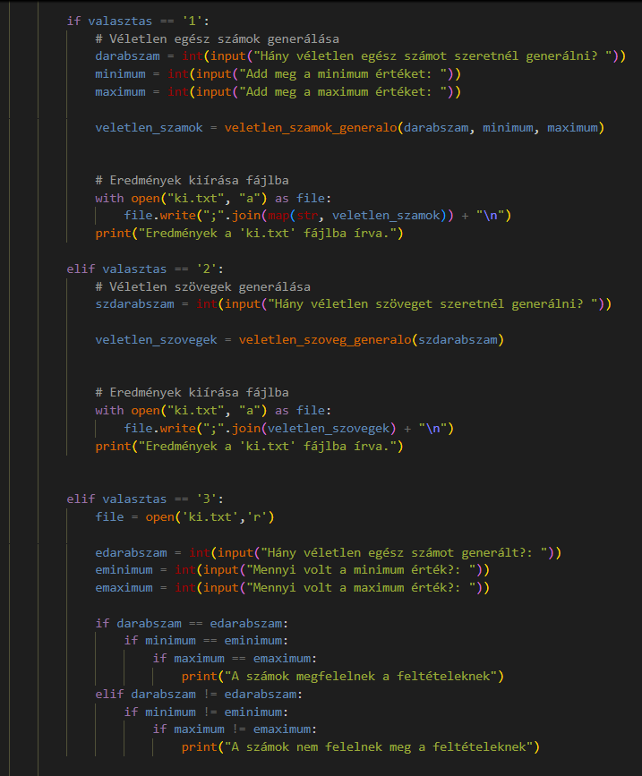
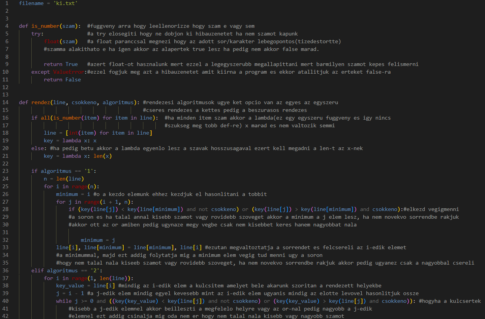
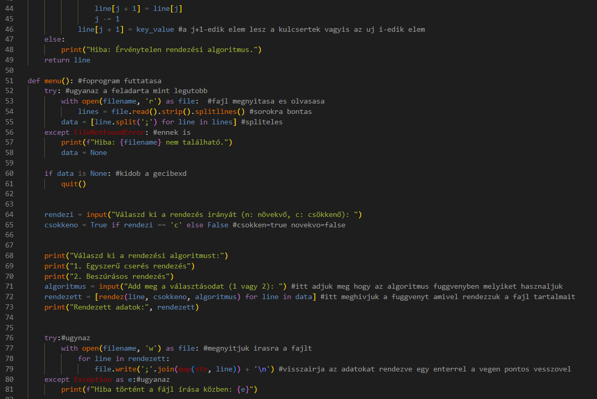
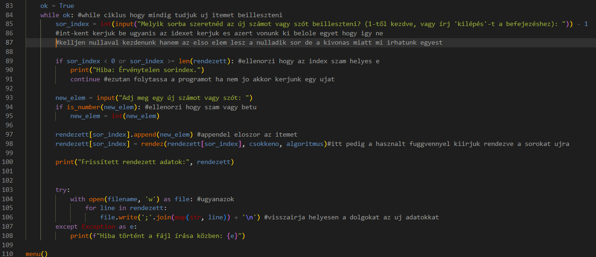

Projekt munka
Készítette: Bachraty Marcell , Fehérvári Antal , Haller Péter

1. feladat
Fehérvári Antal készítette
Véletlen számok és szövegek generálása,
Megkérdezzük a felhasználótól hogy mit szeretne csinálni.

Választások 1-3
Eldöntheti a felhasználó hogy melyik lehetőséggel szeretne élni. Ezeket 1-3-ig terjedő gombok lenyomásával érheti el.
- Véletlen egész számok generálása
- Véletlen szövegek generálása
- Számok ellenőrzése

Választások 4-5
Eldöntheti a felhasználó hogy melyik lehetőséggel szeretne élni. Ezeket 4-5-ig terjedő gombok lenyomásával érheti el.
- Szövegek ellenőrzése
- Kilépés

2. Python feladat
Haller Péter készítette
A 2. feladat leírásai a képeken fognak szerepelni!

2. Python feladat

2. Python feladat
Feladatok beosztása:
- Python1: Fehérvári Antal
- Python2: Haller Péter
- Webpage: Bachraty Marcell
Stages
-
Feladat 1
Véletlen számok, szövegek generálása -
Választások 1-3
Lehetőségek 1-2-3 -
Választások 4-5
Lehetőségek 4-5 -
2. feladat
2. kép -
2. feladat
3. kép